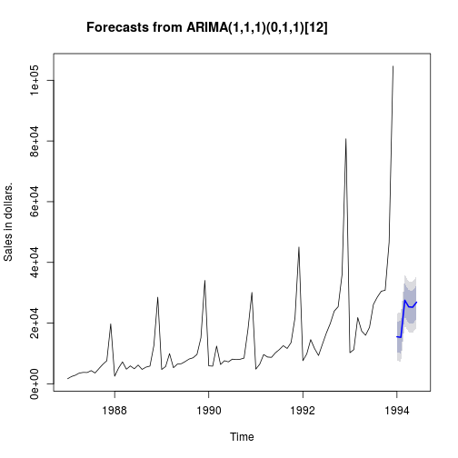

- All companies that offers products possibly must face with one or more of the following problems:
- Losing clients for being out of stocks.
- How to decide when to buy and how much.
- Having an excessive inventory.
Ricardo Rios
Statistician
To sort the preceding problems out, firstly we must know the demand behaviour of the product or products through the time.
With this information, we will develop statistical models to generate accurate demand forecast.
There are many approach to model demand such as exponential smoothing models, state space models, ARIMA models, and so on.
Finally, an application must be developed in order to allow potential users generate forecast without any knowledge of statistical software.
An shiny application was developed with monthly sales for a souvenir shop at a beach resort town in Queensland, Australia, for January 1987-December 1993 (original data from Wheelwright and Hyndman, 1988).
In spite of the shiny application uses fixed data, the source code can be easily adapted to other context.
The application can be accessed in the following url:
https://ricardoues.shinyapps.io/ShinyApplication/
